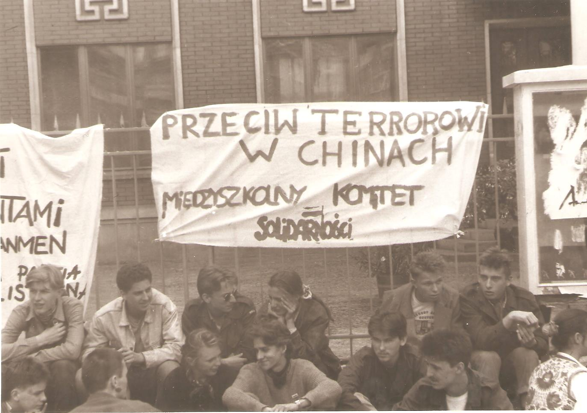

Protest at the Chinese embassy in Poland
波兰中国大使馆外的抗议

Protesters gather outside the Chinese embassy in Poland after the crackdown in Beijing. A Polish-language banner reads “Against terror in China.”
北京发生镇压后，抗议者聚集在中国驻波兰大使馆外。一条波兰语横幅写着“反对中国的恐怖镇压”。
Photo record
- Date
- June 6, 1989
- Location
- Chinese embassy, Poland
- Photographer
- Sta1972
- Source
- Wikimedia Commons record Full-size source file
- Reuse
- CC BY-SA 4.0
The detail image is the Commons file. The gallery thumbnail is resized.